UREx benchmark diagrams 20 scenarios · 23 images. Click an image to inspect it at full resolution. Source provenance and preparation steps are in manifest.json . This review contains no answer-key text.
scenario_02 · Why does one ALU control bit go to two places? Initial diagram 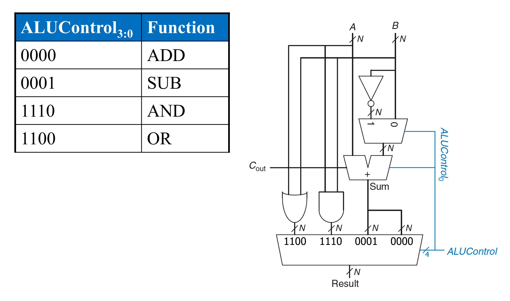
scenario_03 · Where does the immediate go in `addi`? Initial diagram 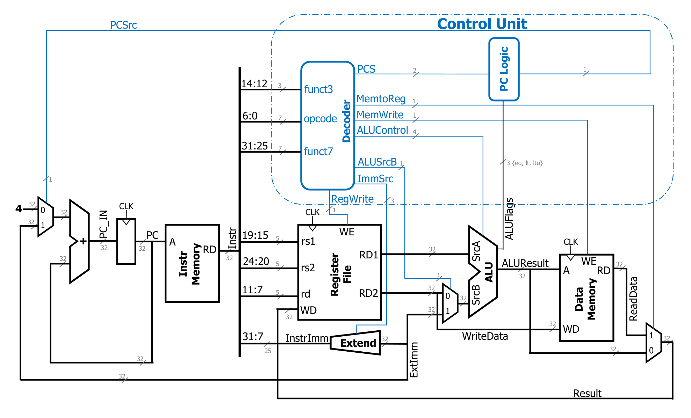
scenario_04 · Can these two processors run the same instructions? Initial diagram 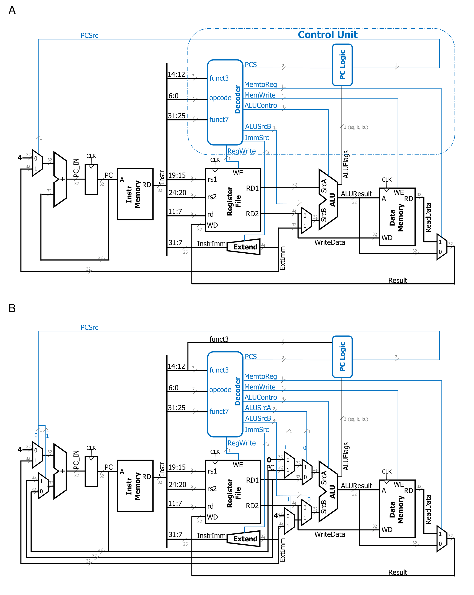
scenario_05 · Trace both outcomes of `beq` Initial diagram 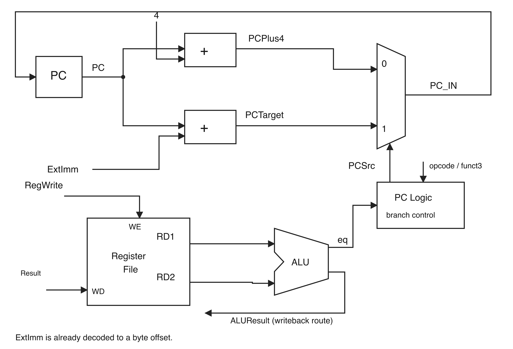
scenario_06 · Two values leave a `jalr` Initial diagram 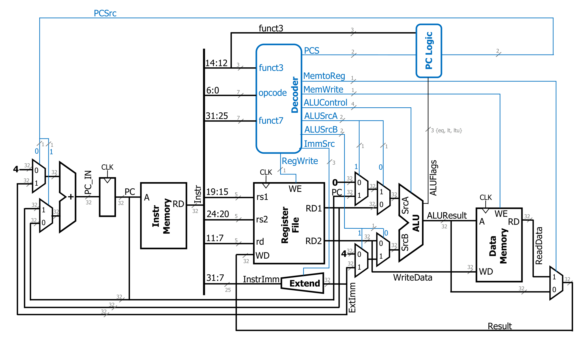
scenario_07 · Which values do pipeline registers hold? Initial diagram 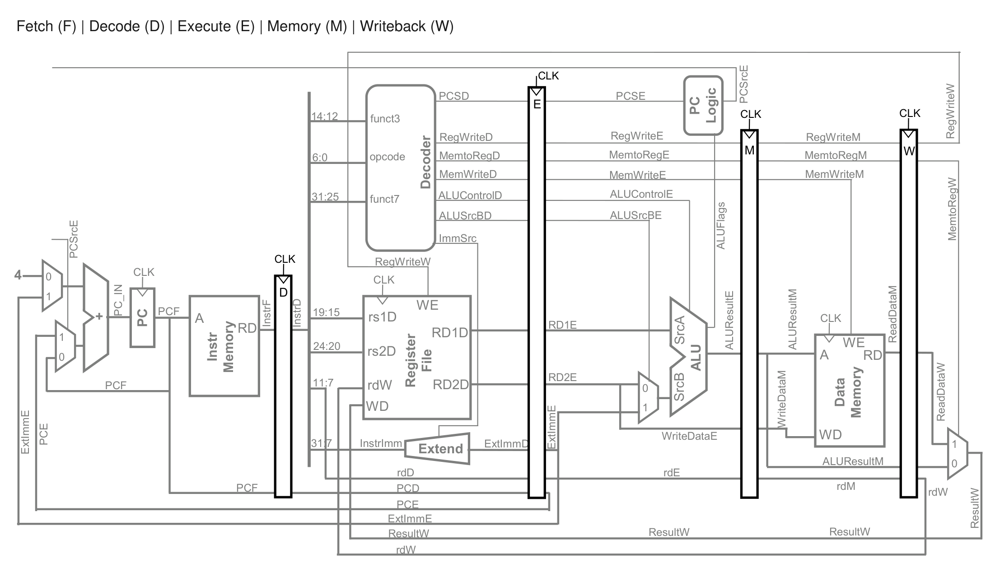
scenario_08 · Where does a forwarded value enter? Initial diagram 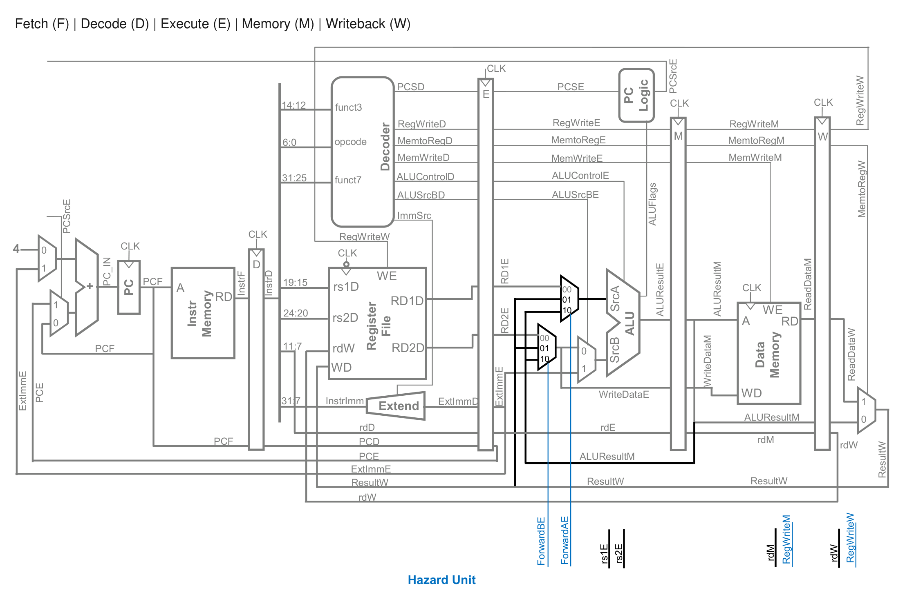
scenario_09 · Where does the load-use bubble go? Initial diagram 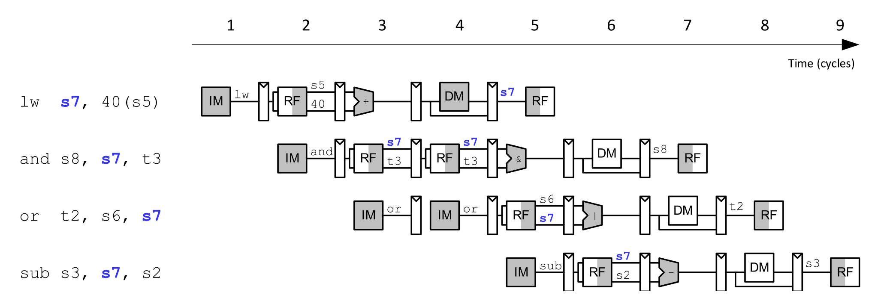
scenario_10 · Which instructions get flushed? Initial diagram 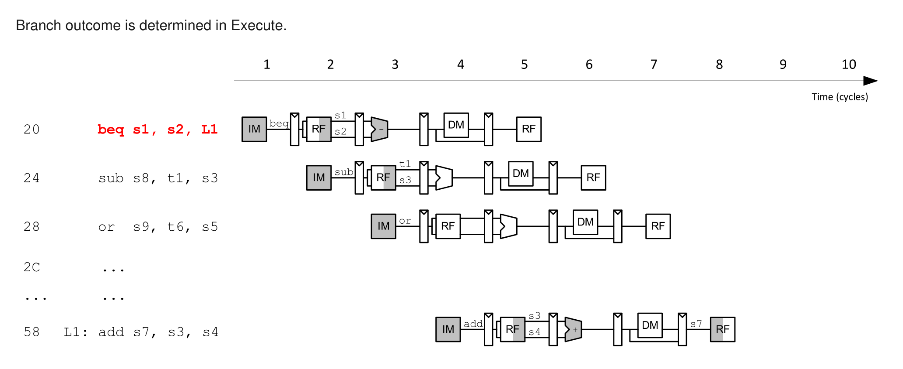
scenario_11 · Why do two memory blocks fight for one line? Initial diagram 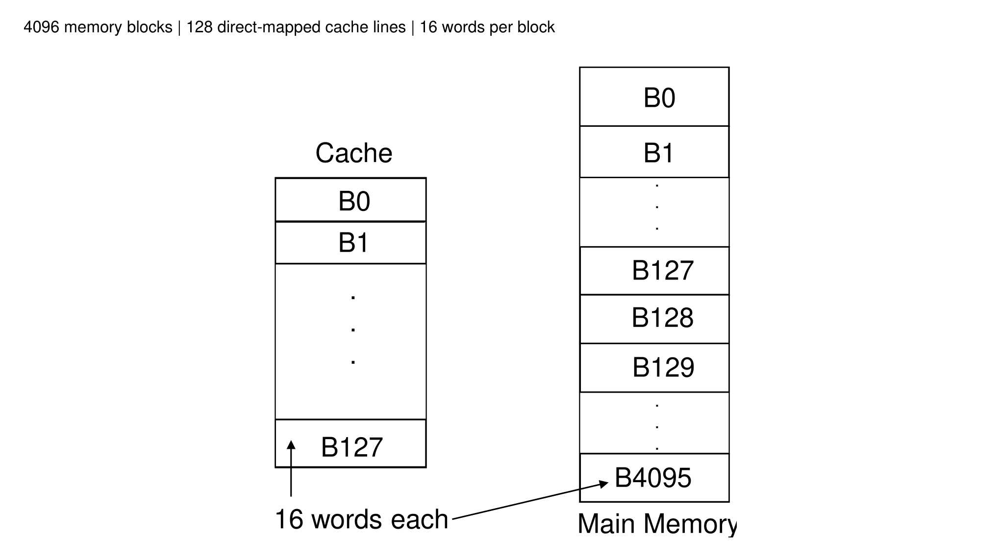
scenario_12 · What does two-way placement change? Initial diagram 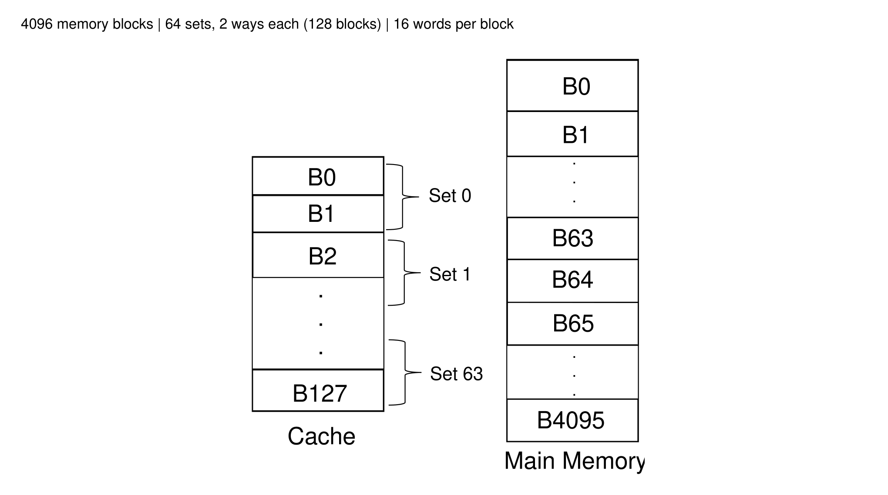
scenario_14 · What can we infer from this round-robin timeline? Initial diagram 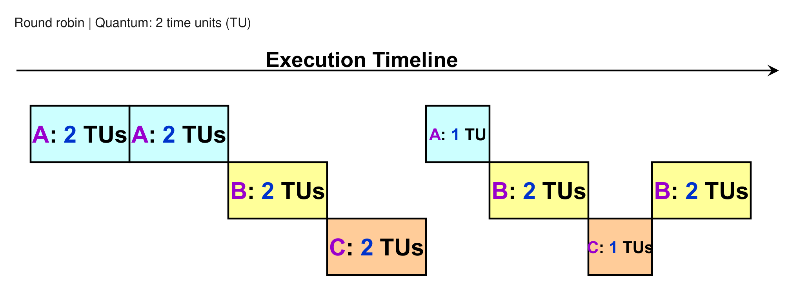
scenario_15 · Where does the second waiter go? Initial diagram 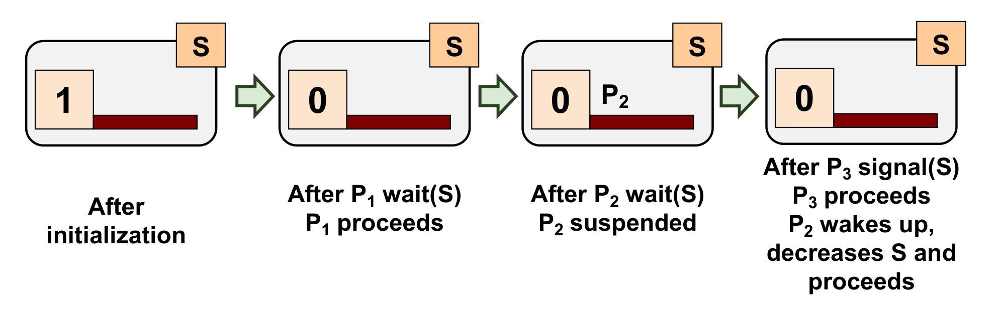
scenario_16 · Which crossings change the PWM output? Initial diagram 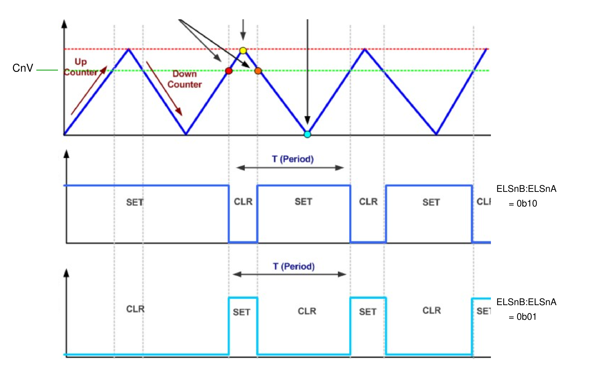
scenario_17 · Where are UART bits sampled? Initial diagram 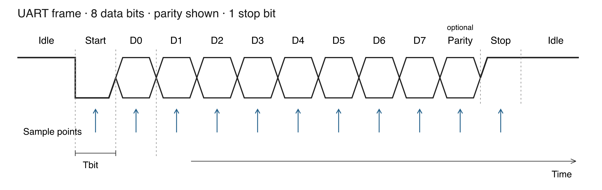
scenario_19 · Who actually adds the application? Initial diagram 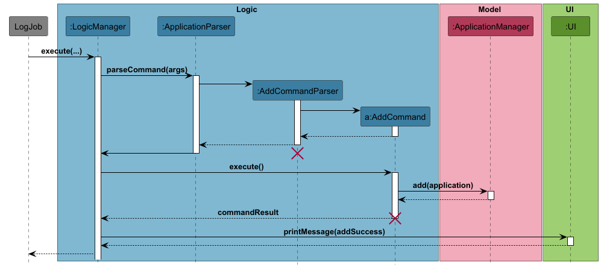
scenario_20 · What can this class diagram prove? Initial diagram 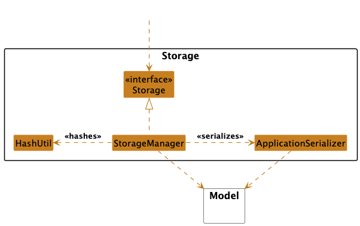